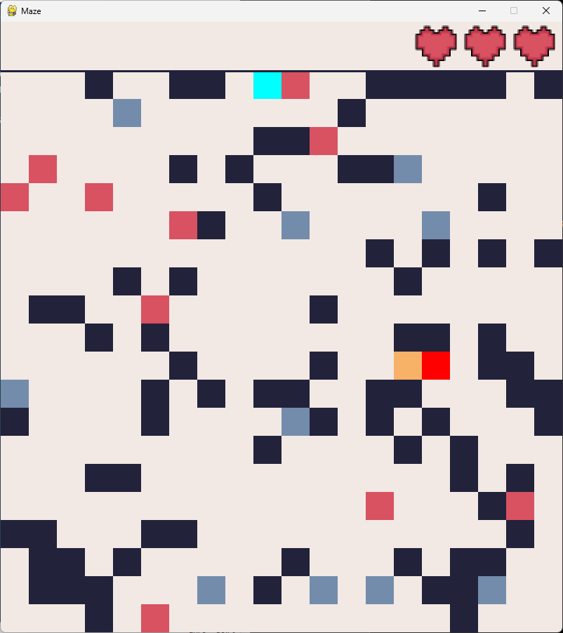
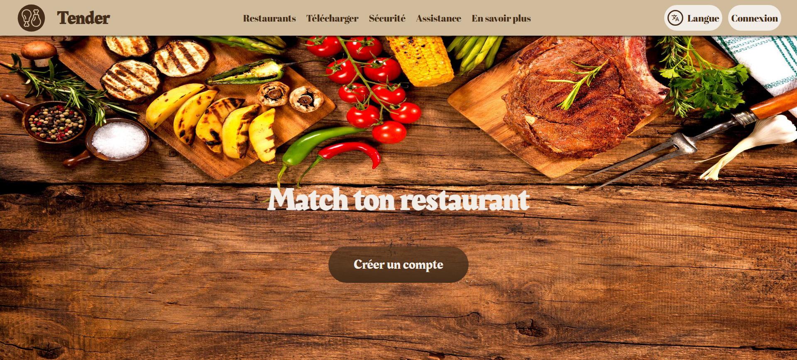
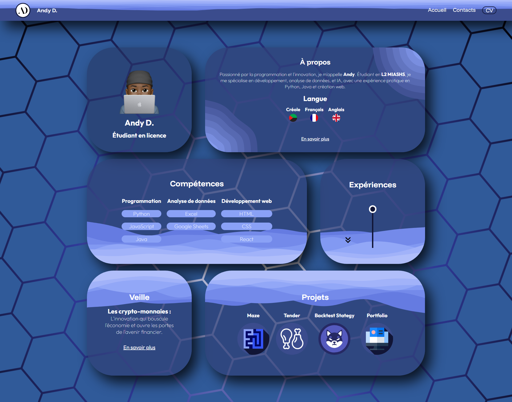

Maze

Tender

Backtest Strategy

Portfolio

Dans ce projet, j'ai conçu un labyrinthe interactif où l'objectif est de récupérer des pièces ou de trouver la sortie pour gagner.
Le joueur doit faire face à plusieurs défis :
Ce projet a permis de mettre en pratique mes compétences en programmation, gestion des événements de jeu et logique algorithmique.

J'ai réalisé un site web innovant appelé Tender, dont l'objectif est de faciliter le choix d'un restaurant pour un groupe d'amis. Le site permet de croiser les préférences culinaires de chaque membre du groupe afin de proposer le restaurant qui convient le mieux à tous.
Les fonctionnalités clés incluent :
Ce projet m'a permis de développer mes compétences en développement web full-stack, algorithmes de recommandation et conception d'interfaces utilisateur (UI/UX).

J'ai mis en place un backtest de stratégie de trading visant à évaluer l'efficacité de différentes approches sur les marchés des cryptomonnaies. Ce projet m'a permis d'automatiser l'analyse de mes stratégies de trading et de mieux comprendre leur rentabilité avant de les appliquer en conditions réelles.
Outils et technologies :
Grâce à ce projet, j'ai approfondi mes compétences en analyse de données financières, en programmation d'algorithmes de trading et en backtesting de stratégies. Ce projet m'a permis de mieux maîtriser la prise de décision en trading tout en rationalisant le processus d'évaluation des performances.
# Importations standard
import numpy as np
from datetime import datetime, timedelta
from json import load
from time import sleep
# Bibliothèques tierces
import pandas as pd
from binance.client import Client
from concurrent.futures import ThreadPoolExecutor
import webbrowser
...
La création de mon portfolio est un projet majeur qui reflète l'ensemble de mes compétences techniques et créatives. Ce site a pour objectif de présenter mes expériences professionnelles, projets personnels et compétences clés de manière claire et interactive.
Outils et technologies :
Ce projet me permet de perfectionner mes compétences en développement front-end, de renforcer ma créativité et de maîtriser la conception d'interfaces utilisateurs (UI/UX).
Le portfolio lui-même est une démonstration vivante de mon savoir-faire, ce qui en fait un projet majeur dans mon parcours.
